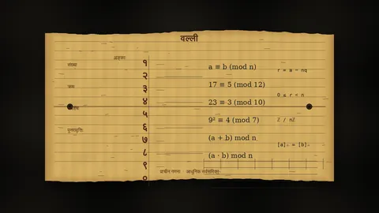
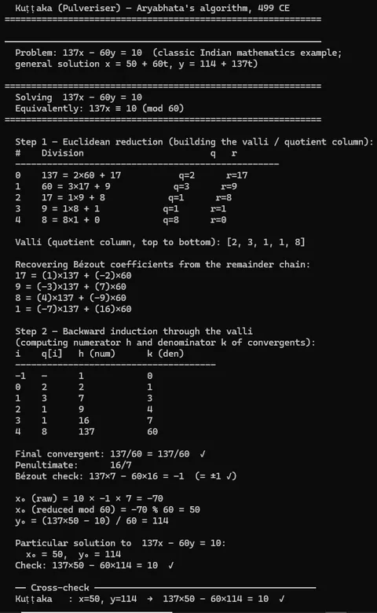

Part 4 of 5
The Algorithm That Grinds Problems to Dust
By Sukalyan RoyPublished 10 min read

TL;DR #
-
Aryabhata's kuṭṭaka is the first known algorithm for solving linear indeterminate equations.
-
It reduces large numbers with Euclidean division, then reverses those steps to recover an integer solution.
-
The procedure is mathematically equivalent to the extended Euclidean method used for modular inverses today.
-
Its original astronomical purpose was finding day counts where multiple cycles met specified positions.
-
The historical claim is about independent discovery, not a known transmission into European mathematics.
Aryabhata, in 499 CE, wrote down a genuine algorithm. An actual step-by-step procedure with defined inputs, a sequence of operations, a termination condition, and a guaranteed output.
The structure is so clean that when you look at it next to the extended Euclidean algorithm which is a standard tool in modern cryptography and modular arithmetic, you realize they are, up to notation, the same thing.
The problem Aryabhata was actually trying to solve #
The kuṭṭaka came from the following kind of question, which Indian astronomers faced constantly:
A planet completes its orbital cycle in some large number of days. Another planet completes its cycle in a different large number of days. You want to know the earliest day on which both planets will simultaneously be at specified positions in their orbits - when the cycles realign. You need an integer. The days elapsed since the epoch must divide evenly into whole numbers of orbits, plus or minus whatever offset you're targeting.
This translates directly into what's called a linear congruence: find a number t such that t ≡ r₁ (mod p₁) and t ≡ r₂ (mod p₂).
More generally: find integer x such that ax ≡ c (mod b).
Equivalently, find integers x and y such that ax − by = c.
This is a linear indeterminate equation, or in Western terminology, a linear Diophantine equation.
Take a small version of that problem. Suppose the day count must leave remainder 3 when divided by 7, so t = 7x + 3. It must also leave remainder 2 when divided by 11. Substitute the first condition into the second:
7x + 3 ≡ 2 (mod 11)
7x ≡ 10 (mod 11)
7x − 11y = 10Now the astronomical question has become an equation in integers. Solve it and x leads back to the day count: x = 3 produces t = 7×3 + 3 = 24.
Bhāskara I's commentary includes an example involving Saturn and Mars requiring a day-count satisfying specific orbital residue conditions; the smallest solution was a number in the hundreds of millions. You can't find this by trial and error. The systematic procedure is precisely what the kuṭṭaka provides. [Wikipedia: Kuṭṭaka]
I'm being careful about this claim because the temptation with this series is to reach. "First algorithm" is a title you can assign to many things - the Euclidean algorithm for GCD is older, and so are procedures for square roots. What the kuṭṭaka is, specifically and defensibly, is the first known algorithm for solving linear indeterminate equations.
Who was Aryabhata? #
Aryabhata was born in 476 CE in Kusumapura, near what is now Patna in Bihar. We know his birth year unusually precisely for a fifth-century mathematician: the Āryabhaṭīya itself states he was 23 years old when he composed it, and the astronomical data internal to the text pins the composition to 499 CE. He was working inside the Gupta Empire, which had produced Kālidāsa, and inside a mathematical tradition that already had strong foundations in astronomy and arithmetic.
The Āryabhaṭīya is 121 verses across four chapters (108 in the main body plus 13 introductory stanzas in the Gitikapāda). The mathematical content lives in the Ganitapāda (33 verses), which covers series formulas, square and cube root extraction, an approximation of π accurate to four decimal places (62832/20000 = 3.1416), a sine table at 3°45' intervals, and in just verses 32 and 33, a compressed description of the algorithm later called the kuṭṭaka.
The entire procedure in two stanzas of Sanskrit, so terse that Bhāskara I's commentary in 629 CE was needed to make it legible, with 24 worked examples from astronomy. "Mostly obscure and incomprehensible" is how later scholars described the original verses.
The pulveriser: how it actually works #
Kuṭṭaka means "pulverisation" - breaking to powder. The name describes the method: you take large numbers and grind them down until they're manageable.
Here is the algorithm, spelled out for ax − by = c with positive a and b.
First compute g = gcd(a, b). If g does not divide c, there is no integer solution. If it does, divide the whole equation by g and work with A = a/g, B = b/g, and C = c/g. Now A and B are coprime.
Step 1: Grind the numbers down. Build the valli by running the Euclidean algorithm on A and B, recording the quotient at each step:
A = q₀·B + r₀
B = q₁·r₀ + r₁
r₀ = q₂·r₁ + r₂
...The sequence q₀, q₁, ..., q_{n-1} is the valli - Sanskrit for "column" or "creeper." This is the pulverising phase: each remainder is smaller than the last until the two large inputs have been ground down to 1.
Step 2: Recover what the grinding hid. Reverse the divisions to express 1 as a combination of A and B. The quotient recurrence performs that back-substitution mechanically:
h₋₁ = 1, h₀ = q₀; h_i = q_i · h_{i-1} + h_{i-2}
k₋₁ = 0, k₀ = 1; k_i = q_i · k_{i-1} + k_{i-2}After n steps, h_{n-1}/k_{n-1} = A/B (the reduced ratio). The pair just before the end - h_{n-2} and k_{n-2} - satisfies A · k_{n-2} − B · h_{n-2} = ±1.
Step 3: Scale and reduce. Multiply k_{n-2} by C, adjust for the ± sign, and reduce modulo B to get the smallest non-negative x₀. Then y₀ follows from the reduced equation directly. The same pair also solves the original equation because all three coefficients were divided by the same g.
The procedure terminates in as many steps as the Euclidean algorithm takes on (a, b), which is logarithmic in the size of the inputs. That's it.
A worked example: 137x − 60y = 10 #
Valli (quotients of gcd(137, 60)):
137 = 2×60 + 17 q=2
60 = 3×17 + 9 q=3
17 = 1×9 + 8 q=1
9 = 1×8 + 1 q=1
8 = 8×1 + 0 q=8Valli: [2, 3, 1, 1, 8].
Now reverse the divisions. This is the part the quotient table below performs without making you rewrite every remainder:
1 = 9 − 8
= 9 − (17 − 9)
= 2×9 − 17
= 2×(60 − 3×17) − 17
= 2×60 − 7×17
= 2×60 − 7×(137 − 2×60)
= 16×60 − 7×137The numbers have been ground down to 1, then unfolded into the combination we need. The same backward fold appears compactly as convergents:
| i | q | h | k |
|---|---|---|---|
| −1 | - | 1 | 0 |
| 0 | 2 | 2 | 1 |
| 1 | 3 | 7 | 3 |
| 2 | 1 | 9 | 4 |
| 3 | 1 | 16 | 7 |
| 4 | 8 | 137 | 60 |
Penultimate convergent: 16/7. Check: 137×7 − 60×16 = 959 − 960 = −1
Scale by c = 10 and adjust for sign: x₀ = 10 × (−1) × 7 = −70. Reduce mod 60: −70 mod 60 = 50.
y₀ = (137×50 − 10) / 60 = 114.
Verify: 137×50 − 60×114 = 6850 − 6840 = 10.
The general solution is x = 50 + 60t, y = 114 + 137t for any integer t. Smaller particular solution: t = −1 gives x = −10 (negative, not physical), t = 0 gives x = 50. The code in code/kuttaka.py runs this example - and three others, including an astronomical one - and cross-checks every result against the modern extended Euclidean algorithm.
Why this is an algorithm and the earlier posts aren't (quite) #
Pāṇini built a formal generative system.
A finite rule base that produces an infinite set of valid Sanskrit forms. It has computational structure: context-sensitive rules, ordered application, conflict resolution. But deriving a specific word form from those rules is a cognitive process requiring a trained expert; there is no mechanical procedure that takes "input string" and terminates with "output string" without judgment.
Piṅgala's work on chandas - metrical analysis, enumeration of syllable patterns - anticipates binary representation and combinations. The prastāra (enumeration table) is systematic and structured. But it's closer to a table or a combinatorial scheme than to a procedure: it describes all patterns, not a terminating computation that takes a question and returns an answer.
The kuṭṭaka takes inputs (a, b, c), executes a defined sequence of steps (Euclidean division, quotient collection, backward recurrence), and terminates with a specific numerical output (x₀, y₀).
That's what "algorithm" means in the sense a computer science course uses it, and Aryabhata had that thing.
The caveat: the original verses are so compressed that the step-by-step elaboration is really Bhāskara I's work in 629 CE. Aryabhata clearly described the procedure; how explicit his own understanding of its structure was is harder to establish. What's not in dispute is that the procedure itself is correct, complete, and efficient, and appears in the Indian record around 499 CE, and nowhere in the European record until well into the second millennium CE.
The extended Euclidean connection #
The extended Euclidean algorithm, in its modern form, finds integers x and y satisfying ax + by = gcd(a, b). From there, scaling and reducing gives any ax + by = c. The procedure is: run Euclid on (a, b), then back-substitute through the remainders to recover the coefficients.
The kuṭṭaka and the extended Euclidean algorithm are the same computation. The valli is the Euclidean quotient sequence. The backward fold is back-substitution. The convergents are the intermediate Bézout coefficients.
The identity that gcd(a, b) can always be expressed as an integer combination of a and b was stated by Bachet (1624) for the case ax − by = 1 and is implicit in Euclid; Bézout extended it to polynomials in 1779.
The algorithmic procedure for computing those coefficients - back-substituting through the Euclidean remainder sequence - appears in recognizably modern form in 18th–19th century European mathematics, roughly 1,100 to 1,300 years after Aryabhata depending on which milestone you use. [Wikipedia: Extended Euclidean Algorithm] The standard historical verdict is independent discovery - there is no known pathway from the Āryabhaṭīya to any of these European formulations.
Brahmagupta (~628 CE) extended the kuṭṭaka and used it as a foundation for the bhāvanā (composition law), which is the method for solving Pell's equation - x² − Ny² = 1 - a much harder problem that European mathematics wouldn't seriously tackle until Fermat and Euler in the 17th–18th centuries.
What it runs on today #
You can see this in modern RSA encryption, though indirectly. Computing a modular inverse - finding x such that ax ≡ 1 (mod m) - is exactly the kuṭṭaka's core operation, applied to the specific case c = 1. RSA key generation requires this: the private exponent d satisfies e · d ≡ 1 (mod λ(n)), found by running the extended Euclidean algorithm. That algorithm and the kuṭṭaka are structurally the same thing.
What I find strange about this is that every algorithms textbook I've read covers the extended Euclidean algorithm without a word about where it came from. The method is just there, as if it fell from the sky.
The code in code/kuttaka.py demonstrates this directly. The modular inverse example (17x ≡ 1 mod 5) runs through the valli, recovers x = 3, and the extended Euclidean cross-check returns the same answer. Not similar - identical. Because it's the same algorithm.
python3 code/kuttaka.py
The output shows the valli construction for each problem, the backward fold step by step, the Bézout check, and the cross-check against the extended Euclidean method. All four problems agree.
We do actually know about it #
The kuṭṭaka is not obscure within Indian mathematics history. Historians of mathematics know it. It appears in Kim Plofker's Mathematics in India (Princeton, 2009), the standard scholarly reference. It has a Wikipedia page with decent citations. Within the field, there is no controversy about what Aryabhata did.
What's annoying is the gap between "known within the field" and "known by engineering students." My entire undergraduate curriculum covered algorithms with no mention of this. I sat through multiple courses on number theory and cryptography - both fields where the extended Euclidean algorithm is foundational - and heard nothing about Aryabhata.
Which means the next time someone draws the course diagram - here are your foundational algorithms, here is where they came from, there's now a choice being made about what to leave out.
Sources & further reading #
-
Wikipedia, "Kuṭṭaka": https://en.wikipedia.org/wiki/Ku%E1%B9%AD%E1%B9%ADaka - algorithm description, historical timeline, Bhāskara I's examples, astronomical applications
-
Wikipedia, "Aryabhata": https://en.wikipedia.org/wiki/Aryabhata - biography, Āryabhaṭīya structure, mathematical contributions
-
MacTutor History of Mathematics, "Aryabhata I": https://mathshistory.st-andrews.ac.uk/Biographies/Aryabhata_I/ - biography and Ganitapāda overview
-
Indica Today, "Linear Indeterminate Equations – Kuttaka": https://www.indica.today/quick-reads/part-3-linear-indeterminate-equations-kuttaka/ - worked column examples
-
Chandrahas blogs, "Linear Indeterminate Equations – Kuttaka": https://chandrahasblogs.wordpress.com/2024/07/10/linear-indeterminate-equations-kuttaka/ - valli construction walkthrough
-
Kim Plofker, Mathematics in India, Princeton University Press, 2009 - the standard scholarly reference for this material; cited across secondary literature
-
Wikipedia, "Extended Euclidean Algorithm": https://en.wikipedia.org/wiki/Extended_Euclidean_algorithm - comparison baseline
-
Wikipedia, "Bézout's identity": https://en.wikipedia.org/wiki/B%C3%A9zout%27s_identity - attribution history (Bachet 1624 for integers; Bézout 1779 for polynomials)
-
Wikipedia, "Kali Ahargana": https://en.wikipedia.org/wiki/Kali_ahargana - astronomical day-counting context